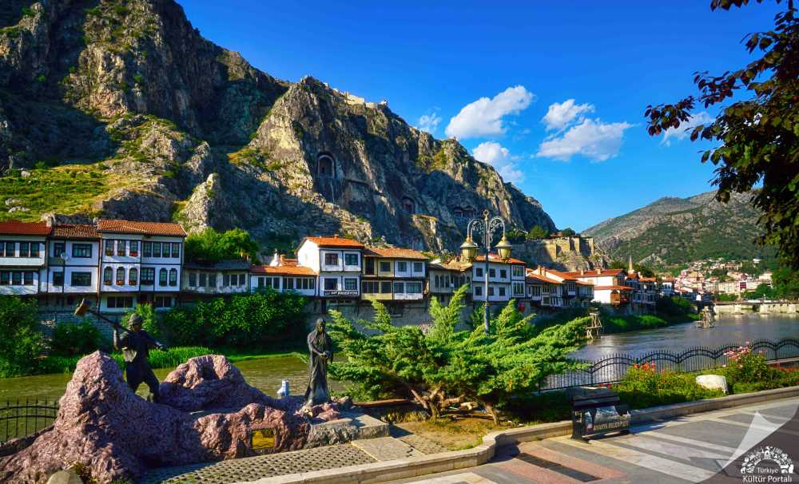

Gezi Rehberi
Amasya Gezilecek Yerler Listesi: 2 Günde Şehri Keşfedin
Şehzadeler şehri Amasya, Karadeniz ile İç Anadolu'nun kesişiminde, binlerce yıllık tarihi ve doğal güzellikleriyle ziyaretçilerini büyülüyor.
Devamını Oku